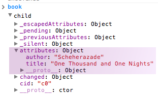
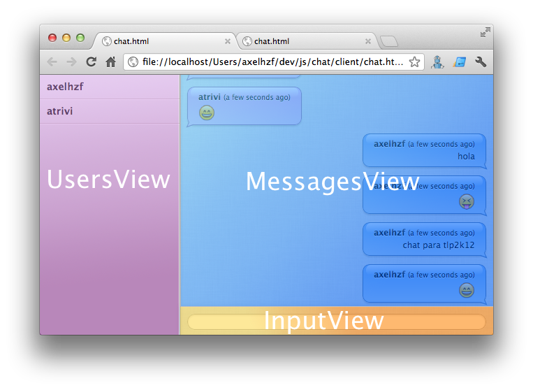
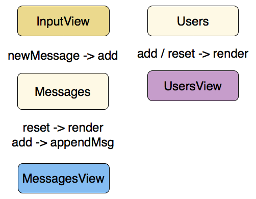

Backbone.js
Introducción
En la actualidad existen muchas librerías MVC para JavaScript: Ember.js, Angular.js, Can.js, Backbone.js, ... por eso elegir la librería adecuada para nuestra aplicación es muy importante.

Backbone es una librería JavaScript que permite estructurar aplicaciones web utilizando componentes básico: models, collections y views. Estos componentes serán la base para construir aplicaciones web complejas.
Su creador es Jeremy Ashkenas (NYTimes y en DocumentCloud) quien también es el creador de otras librerías importantes:
Backbone es librería bastante simple y esa es una de sus principales virtudes.
The magic of backbone, IMO is in its lack of magic. Slim, readable, non-magical source, easily extended for custom needs. #backboneconf
— Henrik Joreteg (@HenrikJoreteg) May 30, 2012Es una librería bastante popular y es utilizada por empresas importantes como Rdio, Hulu y Foursquare entre otras.
¿Por qué utilizar Backbone?
En la sección anterior vimos cómo crear aplicaciones web utilizando jQuery. A pesar de que la aplicación era bastante sencilla el código se estaba complicando. Trabajamos con los datos directamente en el DOM y no había una clara separación de conceptos entre las diferentes capas de la aplicación. Si la aplicación es extremadamente simple, por ejemplo un landing page, esta aproximación podría ser la adecuada. El problema está cuando la complejida aumenta. Necesitamos estructuras que nos permitan manejar esa complejidad o nuestro código se convertirá en un lio imposible de mantener. Algo parecido a la mayoría de plugins jQuery, cuando leo algo de su código, unicamente veo esto:

Aquí es donde reside la gran utilidad de Backbone. La librería añade una pequeña capa de abstracción que permite estructurar la aplicación. Los principales objetivo son:
- Separación de conceptos
- Desvincular los datos del DOM
- Aplicación más mantenible
- Aplicaciones más testeable
Si comparamos Backbone con otras librerías MVC más modernas como pueden ser Angular o Ember, encontramos que Backbone es una librería mucho más simple. Provee los recursos básicos para que a partir de ahí seamos nosotros mismos los que creemos nuestro propio framework. Es por han aparecido muchas librerías para hacer más sencillas las tareas más repetitivas. Normalmente Backbone no te fuerza una determinada forma de hacer las cosas, por ejemplo es totalmente agnóstico del sistema de plantillas y nos permite que seamos nosotros quienes hagamos la integración con la librería que queramos. Por ejemplo Handlebars o React.js.
Estructura
Las clases básicas que provee Backbone son
- Models
- Collections
- View
- Router
La relación con el modelo MVC tradicional sería:
| MVC | Backbone |
|---|---|
| Model | Model / Collection |
| Controller | View / Router |
| View | Template |
La persistencía por defecto que trae Backbone es RESTFul, pero existen plugins que permiten utilizar otros mecanismos sin necesidad de modificar nuestro código. Por ejemplo:
Models
Los modelos son las clases que van a almacenar los datos de la aplicación además de gran parte de la lógica que los rodea: converciones, validaciones, valores calculados y control de acceso. Utilizar los modelos de Backbone nos va a proporcionar una pieza clave para manejar los cambios en la aplicación, los eventos.
// constructor por defecto
var Book = Backbone.Model.extend({});
var book = new Book({
title: "One Thousand and One Nights",
author: "Scheherazade"
});
// extender el constructor
var Book = Backbone.Model.extend({
initialize : function (attributes) {
...
}
});
var book = new Book({
title: "One Thousand and One Nights",
author: "Scheherazade"
});
book.get('title'); //"One Thousand and One Nights"
book.set({title: "March 20", content: "In his eyes she eclipses..."});
book.set("title", "A Scandal in Bohemia");
Eventos
Los eventos nos va a permitir detectar los cambios que se producen en los modelos. Esto es muy importante para mantener la sincronización entre los datos y las vistas.
book.set('title', '...'); // Se lanza evento "change:title" y "change"
book.set({title : '', content : ''}); // Se lanza un evento change
// por cada atributo y un único "change"
book.set({title : ''}, {silent : true}); // No lanza eventos
Attributes
Con defaults podemos asignar valores por defecto a otroso atributos.
var Meal = Backbone.Model.extend({
defaults: {
"appetizer": "caesar salad",
"entree": "ravioli",
"dessert": "cheesecake"
}
});
var meal = new Meal({dessert : 'ice cream'});
meal.get('dessert'); // ice cream
meal.get('entree'); // ravioli
Los atributos se almacenan internamente dentro de attributes

No deberíamos acceder directamente a este objeto, porque estaríamos perdiendo el mecanismo de detección de cambios. En el caso de que necesitemos acceso a todos los atributos, por ejemplo para pasárselos a la vista para que se rendericen, podemos utilizar el método toJSON. Este método devuelve una copia de los atributos.
var artist = new Backbone.Model({
firstName: "Wassily",
lastName: "Kandinsky"
});
artist.set({birthday: "December 16, 1866"});
artist.toJSON(); // { firstName: "Wassily", lastName: "Kandinsky", birthday: "December 16, 1866" }
Las validaciones se realizan en método validate.
var Chapter = Backbone.Model.extend({
validate: function(attrs) {
if (attrs.end < attrs.start) {
return "can't end before it starts";
}
}
});
Sincronización
Mediante la sincronización vamos a persistir los cambios que hagamos en cliente con los datos que tenemos en el servidor. Lo más normal en el desarrollo de aplicaciones single page es tener una API rest con la que se comunique el cliente web. Es por eso que el mecanismo de sincronización por defecto es RESTful.
var Book = Backbone.Model.extend({
urlRoot : '/books'
});
var book = new Book({
title: "The Rough Riders",
author: "Theodore Roosevelt"
});
book.save(); // HTTP POST /books
book.set('title', '...');
book.save({author: "Teddy"}); //HTTP PUT /books/3
book.fetch(); // HTTP GET /books/3
book.destroy(); //HTTP DELETE /books/3
Collections
Las colecciones almacenan listas de modelos.
var Library = Backbone.Collection.extend({
model: Book
});
var library = new Library([book1, book2, book3]);
Collection / modificar
var ship1 = Backbone.Model({name: "Flying Dutchman"});
var ship2 = Backbone.Model({name: "Black Pearl"});
var ships = new Backbone.Collection;
//trigger "add", "remove" events
ships.add([ship1, ship2]);
ships.remove(ship1);
ships.get(ship2.id);
ships.push(ship1);
ships.pop(ship1);
ships.unshift(ship1);
ships.shift(ship1);
Además de estos métodos básico, las colleciones integran los métodos de underscore.js para trabajar con arrays.
Sincronización
var Notes = Backbone.Collection.extend({
url: '/notes'
});
var notes = new Notes();
notes.fetch(); // HTTP GET /notes
notes.fetch({data: {page: 3}}) //HTTP GET /notes?page=3
Router
El router es una parte muy importante de una aplicación. Permite almacenar el estado de una aplicación. Cuando un usuario copia o comparte un enlace, espera que la web sea capaz de recuperar el estado.
Existen dos mecanismos que nos permiten modificar la url desde JavaScript:
- hashFragments
- History API
Los hashFragments están soportados por todos los navegadores mientras que la History API únicamente está soportada por los navegadores modernos. El router de Backbone es capaz de utilizar un mecanismo u otro dependendiendo del soporte del navegador.
El funcionamiento del router consiste en hacer un mapeo entre patrones de url y métodos que se invocarán cuando un patrón coincida.
var Router = Backbone.Router.extend({
routes: {
"help": "help", // #help
"search/:query": "search", // #search/kiwis
"search/:query/p:page": "search" // #search/kiwis/p7
},
help: function() {...},
search: function(query, page) {...}
});
var router = new Router();
Backbone.history.start();
Backbone.history.start({pushState : true});
router.navigate("help", {trigger: true});
View
La vistas son la única parte de nuestra aplicación que esté en contacto con el DOM. Se encargan de renderizar los datos cuando se produzcan cambios en los modelos y de responder a los eventos que se produzcan en el DOM por la interacción del usuario.
var DocumentView = Backbone.View.extend({
render: function() {
var html = this.template(model.toJSON());
this.$el.html(html);
}
});
var document = new Backbone.Model({title : 'title'});
var documentView = new DocumentView({el : '#document', model : document});
documentView.render();
Templates
Underscore cuenta con la función _.template que funciona como un sistema de plantillas muy básico.
var DocumentView = Backbone.View.extend({
template : _.template("<strong>Title<strong> : <%= title %>");
render : function () {
var html = this.template(model.toJSON());
this.$el.html(html);
}
});
El principal inconveniente de las plantillas de undescore es el código inline necesario para hacer cosas tan sencillas como iterar por una lista de elementos.
var list = "<% _.each(people, function(name) { %> <li><%= name %><li> <% }); %>";
_.template(list, {people : ['moe', 'curly', 'larry']});
Es por eso que recomiendo utilizar otro sistema de plantillas. Por ejemplo uno que está bastante extendido, además de ser el que utiliza Ember, es Handlebars

Este sería el mismo código que el ejemplo anterior utilizando Handlebars.
var template = Handlebars.compile(
"{{#each people}}<li>{{ this }}<li>{{/each}}"
);
template({people : ['moe', 'curly', 'larry']});
Para utilizar handlebars desde nuestras vistas tenemos varias opciones:
Podemos compilarlas directamente en la vista. Escribiendo la plantilla inline:
var DocumentView = Backbone.View.extend({
template : Handlebars.compile(
"<strong>Title<strong> : {{title}}");
render : function () {
var html = this.template(model.toJSON());
this.$el.html(html);
}
});
O escribiendo la plantilla en un tag script para poder escribir texto multilinea.
<script type="text/html" id="#documentView">
<ul>
{{#each people}}
<li>{{ name }}</li>
{{/each}}
</ul>
</script>
<script>
var DocumentView = Backbone.View.extend({
template : Handlebars.compile($('#documentView').html()),
render : function() {
this.$el.html(this.template(this.collection.toJSON()));
}
});
</script>
Pero la opción más recomendada es precompilar las plantillas. Por ejemplo utilizando este plugin gulp-handlebars.
Events
El atributo events permite asociar los eventos de DOM que se producen en las vistas
con métodos que se van a ejecutar cuando se lance el evento.
var DocumentRow = Backbone.View.extend({
events: {
"click .icon": "open",
"click .button.edit": "openEditDialog",
"click .button.delete": "destroy"
},
render: function() {...},
open: function() {...},
openEditDialog : function() {...},
});
La vista es la encargada de responder tanto a los eventos del DOM como a los eventos que se produzcan en los modelos y para los que sea necesario actualizar las vistas.
model.on("change", view.render);
view.on("addUser", function (user) {
this.collection.add(user)
});
Testing
Aquí tienen un artículo muy bueno que explica cómo testear cada uno de los componentes de Backbone.
http://tinnedfruit.com/2011/03/03/testing-backbone-apps-with-jasmine-sinon.html
El caso que puede ser más complejo de probar es testear la vistas. La forma más sencillas sería comprobar que el HTML generador al renderizar la vista sea el correcto.
describe("TodoView", function() {
beforeEach(function() {
this.model = new Backbone.Model({title: "My Todo", id: 1});
this.view = new TodoView({model:this.model});
});
it("produces the correct HTML", function() {
this.view.render();
expect(this.view.el.innerHTML)
.toEqual('<a href="#todo/1"><h2>My Todo</h2></a>');
});
});
Ejercicio: backbone-todo
Escribe la aplicación de Todos hicimos con jQuery utilizando Backbone.
Aplicación
Como ejercicio vamos a crear una aplicación de chat utilizando Backbone. Esta aplicación cliente se conectará a un servidor que nos permitirá realizar comunicarnos en tiempo real.
Un consejo cuando empiezas a desarrollar una aplicación es analizar los modelos que tendrá la aplicación. Esto nos va ayudar tanto a planificar el código del front como a planificar el código de backend.
Los modelos que vamos a definir son un modelo User que va a mantener la información de los usuarios que estan conectados y otro modelo Message que representará cada uno de los mensaje que se manden.
Una vez tenemos definido nuestro modelo de datos podemos empezar a hacer un mockup de nuestra aplicación para identificar las partes de las que se compone.

Una forma de identificar las diferentes vistas de la aplicación es analizar las necesidades de actualización. En nuestro caso tendremos una vista que lista los usuarios, que se va a renderizar cada vez que un usuario se conecte o se desconecte. Tendremos otra vista para mostrar los mensajes que se va a renderizar cada vez que se añada un mensaje nuevo. Por último la vista InputView se actualizará con la interacción del usuario.
Un diagrama interesante que podemos realizar es un diagrama de eventos que represente los eventos que van a conectar los modelos y las vistas.

La primera vista que vamos a definir es la vista de los usuarios. Esta vista es bastante sencilla y se limita únicamente a renderizar la collections de usuarios.
App.UsersView = Backbone.View.extend({
template : Handlebars.compile($('#usersTmpl').html()),
render : function () {
var context = {
users : this.collection.toJSON()
};
this.$el.html(this.template(context));
}
});
Para probar que el código funciona correctamente prueba este código desde la consola o añádelo en el código de la aplicación (recuerda borrarlo después).
App.users.reset([{name : 'user1'}, {name : 'user2'}]);
App.usersView.render();
Ahora debemos conectar los eventos para mantener la sincronización entre la vista y el modelo.
App.users.on('add reset', function () {
App.usersView.render();
});
App.users.reset([{name : 'user1'}, {name : 'user2'}]);
En otros casos en los que estemos trabajando con collecciones y vistas, suele ser necesario conectar el evento "remove". En nuestro caso no va a ser necesario porque el servidor va a devolver siempre la lista completa de usuarios. El único evento que se va a lanzar es el reset.
Para la vista de los mensajes vamos a utilizar otra forma de hacer las cosas. En lugar de renderizar el listado completo, nuestra plantilla va a representar un único mensaje.
App.MessagesView = Backbone.View.extend({
msgTemplate : Handlebars.compile($('#msgTmpl').html()),
render : function () {
var view = this;
this.collection.each(function(message) {
view.appendMsg(message);
});
},
appendMsg : function (msg) {
var context = msg.toJSON();
this.$el.append(this.msgTemplate(context));
}
});
El servidor nos notificará cada vez que se añada un mensaje nuevo, por lo tanto esta implementación nos será más útil porque no tendremos que renderizar la lista completa de nuevo.
Prueba la vista añadiendo algunos mensajes.
App.messages.reset([
{username : 'username', timestamp: '01-01-2012', msg : 'hola'},
{username : 'username2', timestamp: '01-01-2012', msg : 'mundo'}
]);
App.messagesView.render();
Conectamos los eventos de la nueva vista
App.messages.on('add', function (message) {
App.messagesView.appendMsg(message);
});
App.messages.on('reset', function () {
App.messagesView.render();
});
var msg1 = new App.Message(
{username : 'username', timestamp: '01-01-2012', msg : 'hola'});
var msg2 = new App.Message(
{username : 'username2', timestamp: '01-01-2012', msg : 'mundo'});
App.messages.reset([msg1]);
App.messages.add(msg2);
En este caso tenemos dos eventos distintos porque se llamará a "reset" cuando se conecte al servidor y a "add" cuando llegue un mensaje nuevo
Ejercicios
- Cuando se añade un mensaje nuevo consigue que la vista haga scroll para que siempre se muestre el último mensaje
- Diferencia entre los mensaje del usuario y los del resto
- Escribe un código de sustitución de smiles.
Pistas
$el.scrollTop()permite mover el scroll$el.prop('scrollHeight')permite conocer el tamaño actual del scroll- En el css están preparadas las clases "chat-bubble me" y "chat-bubble other"
- Hay generado un sprite con smiles, algunos códigos son:
var smiles = [":)", ":'(", ":P", ";)", ":*", ":D", ":@", "¬¬", "8|"];
var codes = ["85", "358", "348", "344", "363", "86", "361", "353", "352"];
InputView
Esta vista va a gestionar la interacción del usuario
App.InputView = Backbone.View.extend({
initialize : function (options) {
this.$input = this.$el.find('input');
},
events : {
"keypress" : "keypress"
},
keypress : function (e) {
if (e.which == 13) { // enter
var val = this.$input.val();
this.$input.val('');
var msg = new App.Message({msg : val});
this.trigger("newMessage", msg);
}
}
});
Conectamos los eventos
App.inputView.on("newMessage", function (msg) {
App.messages.add(msg);
});
Podríamos definir algún tipo de validación, como que los mensajes no deberían estar vacios.
App.Message = Backbone.Model.extend({
validate : function (attributes) {
if(_.isUndefined(attributes.msg) || attributes.msg.length === 0) {
return "el mensaje debe tener contenido";
}
}
});
Únicamente lanzaremos el evento en el caso de que mensaje sea válido.
keypress : function (e) {
if (e.which == 13) { // enter
var val = this.$input.val();
var msg = new App.Message({msg : val});
if(msg.isValid()){
this.$input.val('');
this.trigger("newMessage", msg);
}
}
}
Servidor
El código del backend utiliza Node.js y socket.io. Todavía no hemos entrado en detalle con Node.js pero lo haremos más adelante. Por ahora podemos echarle un vistazo al código.
https://github.com/axelhzf/chat/blob/master/server/app.js
Sincronización de cliente y servidor
var socket = io.connect('http://chat-tlp2k12.herokuapp.com');
socket.on('connect', function () {
var username = prompt("What's your name?");
App.config.set('username', username);
socket.emit('adduser', username);
});
socket.on("initchat", function (response) {
App.messages.reset(response);
});
socket.on('updatechat', function (message) {
App.messages.add(message);
});
socket.on('updateusers', function (data) {
var users = _.map(_.keys(data), function (name) {
return {name : name};
});
App.users.reset(users);
});
App.inputView.on("newMessage", function (message) {
socket.emit('sendchat', message.get('msg'));
});
Al intentar conectarte a un servidor externo el navegador te bloqueará por seguridad. Lo que podemos hacer en estos casos para probar la aplicación es deshabilitar esa medida de seguridad.
OS X : `open -a /Applications/Google\ Chrome.app --args --disable-web-security`
Windows : `chrome.exe --disable-web-security`